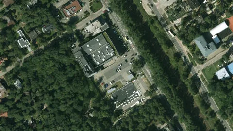
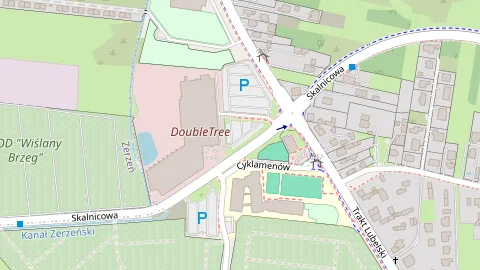
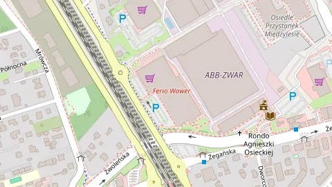
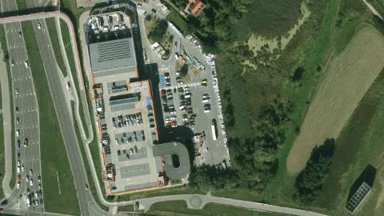
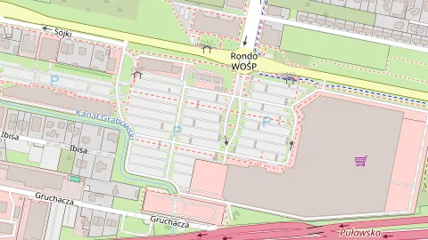
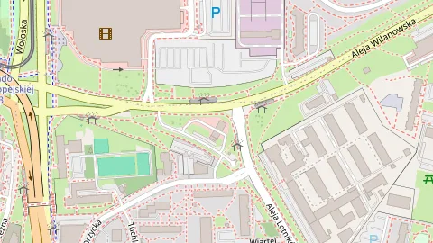
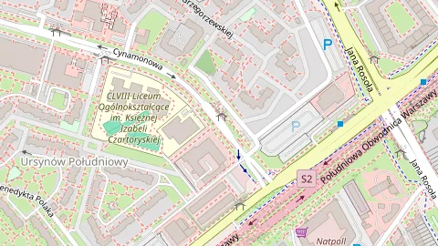
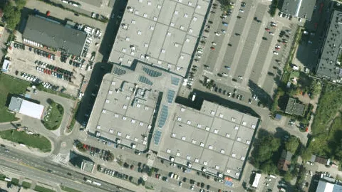
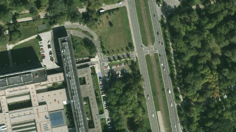

Powrót za kierownicę
Dla osób, które mają prawo jazdy, ale od dawna nie prowadziły. Spokojne tempo, oswojenie z autem, ruchem miejskim i aktualnymi przepisami — bez stresu i oceniania.
Warszawa · Wawer, Mokotów i okolice
Odświeżenie umiejętności po przerwie, przygotowanie do egzaminu na konkretnych trasach WORD oraz jazdy indywidualne dopasowane do Twoich potrzeb.
Zobacz wolne terminyJazdy doszkalające
Trzy sposoby, żeby poczuć się pewnie na drodze.
Dla osób, które mają prawo jazdy, ale od dawna nie prowadziły. Spokojne tempo, oswojenie z autem, ruchem miejskim i aktualnymi przepisami — bez stresu i oceniania.
Jazda po realnych trasach egzaminacyjnych, żeby dzień egzaminu nie był pierwszym razem, gdy je widzisz.
Parkowanie równoległe i prostopadłe, trasa szybkiego ruchu, jazda nocna, jazda w trudnych warunkach — program ułożony pod to, czego akurat potrzebujesz.
Prowadzę jazdy doszkalające również w języku angielskim, w tej samej cenie co po polsku. To mój początek w nauczaniu w języku obcym, więc traktuję to jako wspólne doświadczenie — jeśli szukasz kogoś z wieloletnią praktyką w angielskim, zobacz też ofertę Instruktora Khaleda.
Zajęcia prowadzimy też w języku angielskim i arabskim — te lekcje prowadzi instruktor Khaled w ramach ALP.
Zobacz ofertę ALP ↓Wolne terminy
Wolne terminy na najbliższe tygodnie. Wybierz długość jazdy, kliknij godzinę, która Ci pasuje, i wyślij krótki formularz — termin od razu zostanie wstępnie zarezerwowany dla Ciebie.
W okolicach Wawra zazwyczaj się umawiamy, ale jeśli dojazd Ci nie pasuje, wystarczy napisać i uzgodnić inne miejsce. Napisz lub zadzwoń, żeby ustalić termin i szczegóły – im dłużej zwlekasz, tym dłużej stres czeka na „kiedyś” :P
Wczytywanie wolnych terminów…
Instruktor kat. B
Cześć, nazywam się Michael. Prowadzę pojazdy od 18. roku życia — mój ojciec również był instruktorem nauki jazdy, więc wychowałem się niejako „za kierownicą”. Przed rozpoczęciem pracy jako instruktor zdobyłem szerokie doświadczenie za kółkiem różnych pojazdów: taksówek, busów kontenerowych, śmieciarek, pługo-piaskarek, zamiatarek, koparko-ładowarek, a także pojazdów ciężarowych w kategorii C+E — solówek z przyczepkami oraz zestawów z naczepami. Od 2026 roku poszerzyłem swoje uprawnienia i doświadczenie również o jazdę motocyklem.
Od niemal dwóch lat pracuję jako instruktor nauki jazdy kategorii B. Bardzo dobrze znam trasy egzaminacyjne na placach Odlewnicza, Bemowo i Grójec, natomiast trasy w Garwolinie poznaję obecnie na bieżąco.
Ostatnio zacząłem prowadzić jazdy doszkalające także po angielsku. Jestem na samym początku tej drogi, więc nie oczekuj ode mnie perfekcyjnej płynności — traktuję to jako wspólne doświadczenie z kursantem. Jeśli chcesz przy okazji jazdy poćwiczyć język, bez presji i bez oceniania, zapraszam.
Staram się przekazywać wszystkie zasady i techniki egzaminacyjne tak, jak jest w ustawach i załącznikach do ustaw, abyście rozumieli nie tylko jak zdać egzamin, ale też dokładnie, na co egzaminator zwraca uwagę w procesie oceniania waszej jazdy – byście dokładnie wiedzieli, jakie są zasady egzaminu, za co możecie zdać, za co macie błąd, a za co natychmiastowy wynik negatywny. Lubię tę perspektywę, bo z niej uczycie się trochę na egzaminatora, a nie na kursanta podchodzącego do egzaminu – znacie swoje prawa w trakcie zdawania.
Trasy egzaminacyjne znam bardzo dobrze, szczególnie na Odlewniczej – kursanci czasem jadą dokładnie tą samą trasą, co jeździli ze mną, i robią manewry dokładnie w tym samym miejscu. Potem Bemowo i Grójec, a na końcu Garwolin – tam miałem okazję najmniej jeździć.
Jeśli masz już prawo jazdy, ale długo nie siadałeś za kierownicą – nie musisz mieć żadnego egzaminu na horyzoncie, żeby ze mną poćwiczyć. Wielu moich kursantów wraca do jazdy po latach przerwy – po urodzeniu dziecka, po zmianie miasta, po prostu z braku okazji do jeżdżenia – i na start czuje niepewność albo stres przed samą myślą o wyjeździe na ulicę. Razem odbudowujemy pewność siebie w Twoim tempie: od spokojnych osiedlowych ulic, przez parkowanie i manewry, aż do jazdy w większym natężeniu ruchu, jeśli tego potrzebujesz. Bez oceniania, bez pośpiechu – tylko realna praktyka, która ma Ci pomóc znowu czuć się swobodnie za kółkiem.
U mnie jazda przebiega w bardzo przyjaznej, koleżeńskiej atmosferze, ale z zachowaniem profesjonalizmu co do samego szkolenia. Nie lubię chamstwa, więc na siłę nie jestem miły – staram się być autentyczny w swoim zachowaniu. Mam doświadczenie w pracy w Babskiej Autoszkole, z przeróżnymi kursantami – znaczna większość była zadowolona z mojego szkolenia. Staram się zachowywać relacje koleżeńskie, bo za kółkiem spędzamy jednak kilka dobrych, a czasem kilkadziesiąt godzin, rozmawiając nie tylko o jeździe – dla niektórych to nawet forma psychoterapii, bo mogą się wygadać, jak już mi zaufają.
Pozdrawiam wszystkich moich kursantów – tych, co już zdali, tych przed egzaminem i tych, którzy po prostu przyszli się doszkolić. Mam nadzieję, że będą mieli długą, bezpieczną drogę za kółkiem.
ALP Driving School
Khaled ran the ALP driving school and has over 20 years of experience teaching drivers, both in Poland and abroad. Lessons are taught in English, Arabic, and Polish.
Pricing is individual — get in touch to talk through what you need and agree on a rate.
Khaled doesn't use e-mail or an online form for this — the fastest way to reach him is by SMS, WhatsApp, or a phone call.
Przejrzyste ceny
Jedna stawka godzinowa, bez ukrytych kosztów.
Jedna jazda trwa minimum 2, maksimum 4 godziny — pakiet 10-godzinny rozkłada się na kilka spotkań, do uzgodnienia przy kontakcie.
Stali klienci płacą mniej — 10–15 zł/h niżej niż w cenniku powyżej. Szczegóły przy stałej współpracy.
Ceny takie same w języku angielskim (dotyczy jazd ze mną — dla lekcji z Instruktorem Khaledem w j. angielskim/arabskim ceny są indywidualne, zobacz jego sekcję).
Opinie z Google
Prawdziwe opinie kursantów — prosto z wizytówki Google i wiadomości po zdanych egzaminach.
Zdjęcia i filmy
Kursanci, którzy wyrazili zgodę na publikację zdjęcia, oraz nagrania z placu manewrowego.
Umów jazdę
Instruktor: Michael
Telefon: 690 360 164
E-mail: MichaelRabti@gmail.com
Obszar działania: Wawer, Mokotów i okolice Warszawy — dojazd do innych dzielnic po ustaleniu.
Instructor: Khaled (ALP Driving School)
Phone: 570 971 757
Contact: SMS, WhatsApp or a phone call — no e-mail or online form.
Languages: English, Arabic, Polish.
Dojazd bezpłatny

Otwórz w Mapach Google ↗ : Będzińska / K&M ParkDojazd bezpłatny

Otwórz w Mapach Google ↗ : Zerzeń / DoubleTree by HiltonDojazd bezpłatny

Otwórz w Mapach Google ↗ : Ferio WawerZdjęcia satelitarne: © Esri, Maxar, Earthstar Geographics
Do uzgodnienia telefonicznie

Otwórz w Mapach Google ↗ : Bricoman Warszawa WilanówDo uzgodnienia telefonicznie

Otwórz w Mapach Google ↗ : Auchan Puławska 427Do uzgodnienia telefonicznie

Otwórz w Mapach Google ↗ : Stacja Shell koło Galerii MokotówDo uzgodnienia telefonicznie

Otwórz w Mapach Google ↗ : Parking Cynamonowa 4 (koło dealera Mazdy)Do uzgodnienia telefonicznie

Otwórz w Mapach Google ↗ : Łopuszańska 22Do uzgodnienia telefonicznie

Otwórz w Mapach Google ↗ : al. Niepodległości 213 — parking pod Biblioteką NarodowąZdjęcia satelitarne: © Esri, Maxar, Earthstar Geographics
Jazda w jednym z tych miejsc kosztuje 175 zł/h (dopłata 15 zł/h za dojazd) — chyba że tego dnia i tak jestem w pobliżu, bo mam jazdę w tym samym albo sąsiednim miejscu; wtedy 160 zł/h. Dokładną cenę grafik pokazuje przy każdej godzinie.